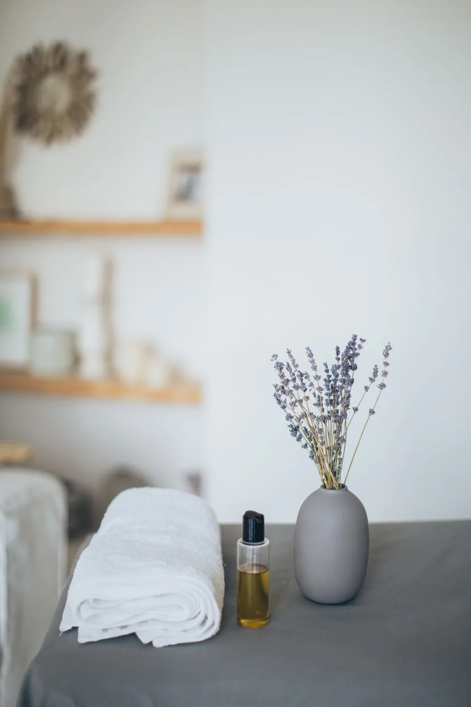

Minőség
Gondosan kiválasztott hatóanyagokkal és személyre szabott kezeléssel dolgozom.
Sipos Eliza, mesterkozmetikus
Hiszek a gondoskodás erejében és abban, hogy minden bőr megérdemli a személyre szabott törődést.
Időpontot kérek
Sipos Eliza vagyok, az Eliza Beauty Salon megálmodója. Hiszem, hogy a kozmetika a szép bőr mellett önbizalomról, jó közérzetről és énidőről is szól.
A Beauty Academy szakmai trénereként és a kozmetikus mesterképzés elvégzése után is fontos számomra a folyamatos tanulás. Nálam nincs sablonkezelés: megismerem a bőrödet és a mindennapi rutinodat.
A szépség mindig is az életem része volt, így nem volt kérdés, hogy a kozmetika lesz a hivatásom. Az első évek sok tanulással és kihívással teltek, de a kitartásomnak köszönhetően folyamatosan fejlődtem.
Megnyitottam saját szalonomat, az Eliza Beauty Salont.
A Beauty Academy szakmai trénereként és oktatójaként segítettem más kozmetikusokat.
Mesterkozmetikusi címet szereztem.
Gondosan kiválasztott hatóanyagokkal és személyre szabott kezeléssel dolgozom.
Érthetően beszélünk a bőröd állapotáról és az ápolás lehetőségeiről.
A természetes szépséged kiemelése a célom.
A folyamatos tanulás szakmai munkám része.
A kezelés egyben alkalom a pihenésre és a feltöltődésre.
Privát, nyugodt környezetben fogadlak. A célom, hogy a bőröd megkapja a megfelelő törődést, te pedig kiszakadhass a mindennapi rohanásból.
A kezelés után az otthoni rutinod kialakításában is segítek, személyre szabott termékajánlásokkal és praktikus tanácsokkal.
Kérdésed van a kezelésekről, vagy időpontot szeretnél egyeztetni? Keress bizalommal, és segítek megtalálni a számodra legjobb megoldást!
Hétfő–péntek: 9:00–16:00
Kizárólag előre egyeztetett időpontban.
Bemutató időpontkérő. Az űrlap nem küld adatot, és nem hoz létre foglalást.